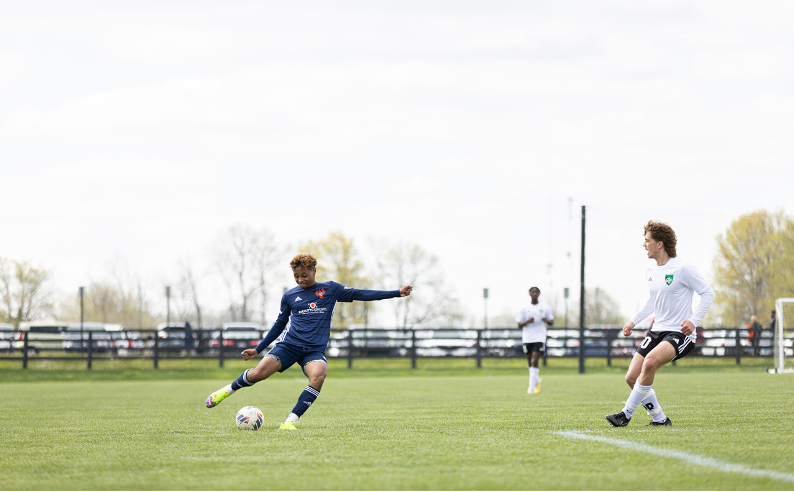
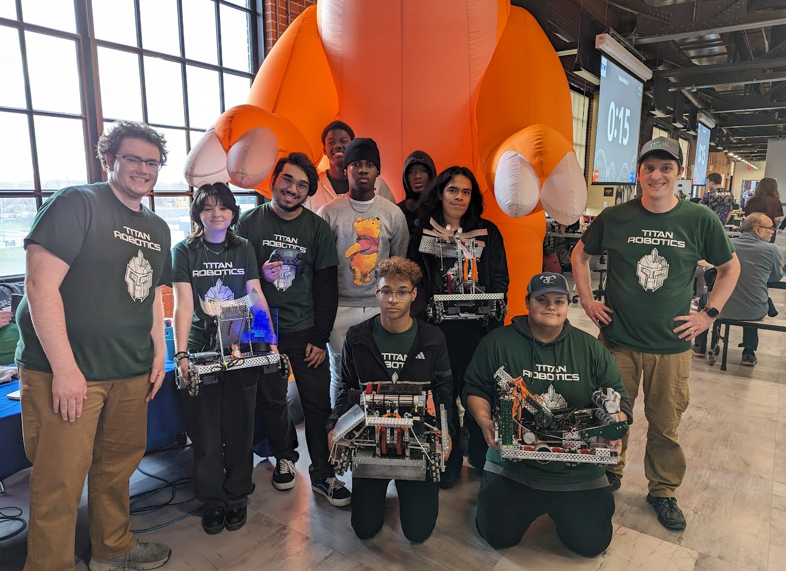

Soccer
I've been playing soccer since I was four years old, and from that moment, I've continually
fallen in love with the game. Despite uncertainties about playing beyond high school, I
approach every match with unwavering passion. I currently play for FC Pride in the ISL Premier
league.

Robotics
My journey with robotics began in 4th grade when I joined the VEX IQ team. Since then, my
passion for robotics has only grown. Recently, I've had the honor of becoming the captain of
my high school's robotics team. This experience has solidified my desire to pursue a career
in robotics engineering, as I find the process incredibly enjoyable and fulfilling.

Internships & Camps
I have actively participated in various camps and internships, such as Nextech and RYLA, where I
gained valuable skills in HTML, CSS, and JavaScript, along with leadership tactics. During my time
at Nextech, I humorously captured a photo of a friend, joking that he resembled Spider-Man. These
experiences have not only honed my technical abilities but also strengthened my capacity for
leadership. Looking ahead, my goal is to secure my next internship in the field of robotics,
leveraging my newfound skills and passion for building and programming robots. Additionally,
I am eager to attend more camps to further expand my knowledge and expertise in robotics and
related fields.